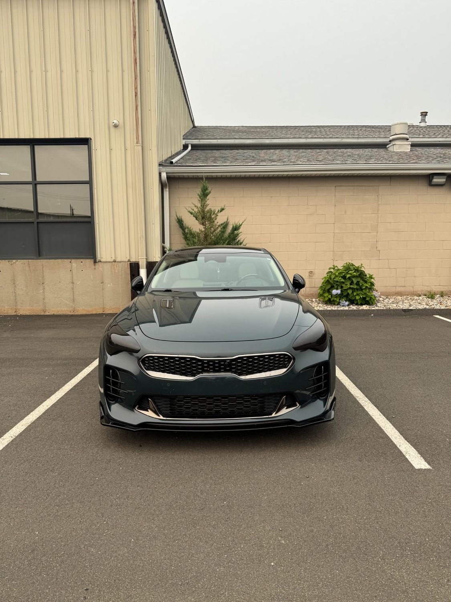

Full Paint Coating
Every painted panel corrected and coated for gloss, hydrophobic behavior and resistance to chemical etching and UV fade.
↗A bonded ceramic layer that repels water, resists chemical staining and makes washing dramatically faster. Applied over corrected paint, wheels, glass and trim.
A ceramic coating locks in the condition of the paint it is applied to. Coat swirled, oxidized paint and you have sealed in swirled, oxidized paint for years. Correction comes first.
Ceramic coating is a liquid polymer that chemically bonds to the clear coat and cures into a hard, slick, hydrophobic layer. Water sheets off instead of sitting, road film has less to grip, and bug splatter, bird droppings and tree sap are far less likely to etch the finish before you can wash them off.
The real difference shows up in maintenance. A coated vehicle takes a fraction of the time to wash and stays looking clean noticeably longer between washes.
The process is mostly preparation. The vehicle is washed, chemically decontaminated, clay-treated and machine-polished to remove swirls and oxidation. Panels are then wiped down to strip polishing oils so the coating bonds directly to bare clear coat.
Coating is not limited to paint. Wheels, wheel barrels, glass, exhaust tips and exterior trim can all be coated. Coated wheels release brake dust far more easily, and coated glass improves visibility in rain.
Coating packages are built around the vehicle and how it is used.
Every painted panel corrected and coated for gloss, hydrophobic behavior and resistance to chemical etching and UV fade.
↗Swirl marks, oxidation, wash marring and light defects are polished out before coating, because coating locks in whatever is beneath it.
↗Coated wheel faces and barrels release brake dust far more easily and resist the heat-baked buildup that ruins finishes.
↗Hydrophobic glass sheds rain at speed, improving visibility and reducing wiper use in bad weather.
↗Exterior plastic and rubber trim treated to resist the chalky fade that makes an otherwise clean car look old.
↗Ceramic coating applied over paint protection film adds slickness and easier cleaning on top of physical impact protection.
↗A ceramic coating will not stop a rock chip, a shopping cart or a door ding. What it does is resist chemical staining, reduce UV fade, prevent water spotting from sitting water, and cut your washing time significantly. If stone-chip protection is the goal, PPF is the correct product, and the two work well together.
Paint condition is evaluated under proper lighting to determine how much correction is needed before coating.
Wash, chemical decon and clay treatment remove bonded contaminants that polishing alone will not lift.
Swirls, oxidation and defects are polished out so the coating locks in corrected paint rather than damaged paint.
Coating is applied panel by panel, leveled, then cured indoors before the vehicle is released.
Searching for ceramic coating near North Haven, CT? Exclusive Auto Lab offers paint decontamination, machine paint correction and professional coating application for paint, wheels, glass and exterior trim.
New vehicles need the least preparation and get the most out of a coating. Existing vehicles usually need correction first, which we handle in-house alongside paint and refinishing work.
Serving North Haven, New Haven, Hamden, Wallingford, Cheshire, Branford, East Haven, West Haven, Meriden and surrounding Connecticut communities.
Professional coatings generally last a few years depending on the product, how the vehicle is stored and how it is washed. Automatic car washes with spinning brushes shorten the life of any coating considerably.
Yes, and washing is where you feel the benefit. Dirt has much less to grip, so a coated vehicle cleans up in a fraction of the time and stays looking clean longer between washes.
Yes, and it is the best case. Factory paint needs minimal correction, so the process is faster and the coating locks in a finish that is already close to perfect.
The coating itself does not. Machine paint correction performed before coating removes swirls, oxidation and light scratches. Deeper scratches through the clear coat require refinishing.
They solve different problems. PPF physically absorbs rock chips and impacts. Ceramic coating adds gloss, chemical resistance and easier cleaning. For a new vehicle, PPF on the front end plus coating over everything is the common combination.
We advise against tunnel washes with spinning brushes on any vehicle, coated or not. They inflict the swirl marks that correction exists to remove. Touchless washes or hand washing preserve the finish.
Reference images showing the kind of work involved. Follow our Instagram for current jobs coming through the shop.



Call, text photos, or request an appointment online. We will tell you what to expect before you bring the vehicle in.